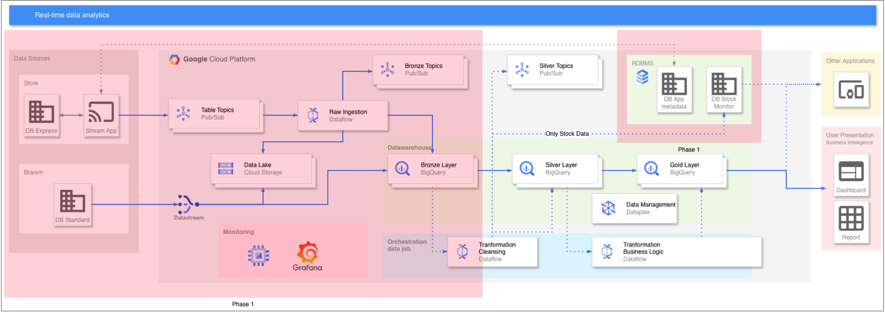
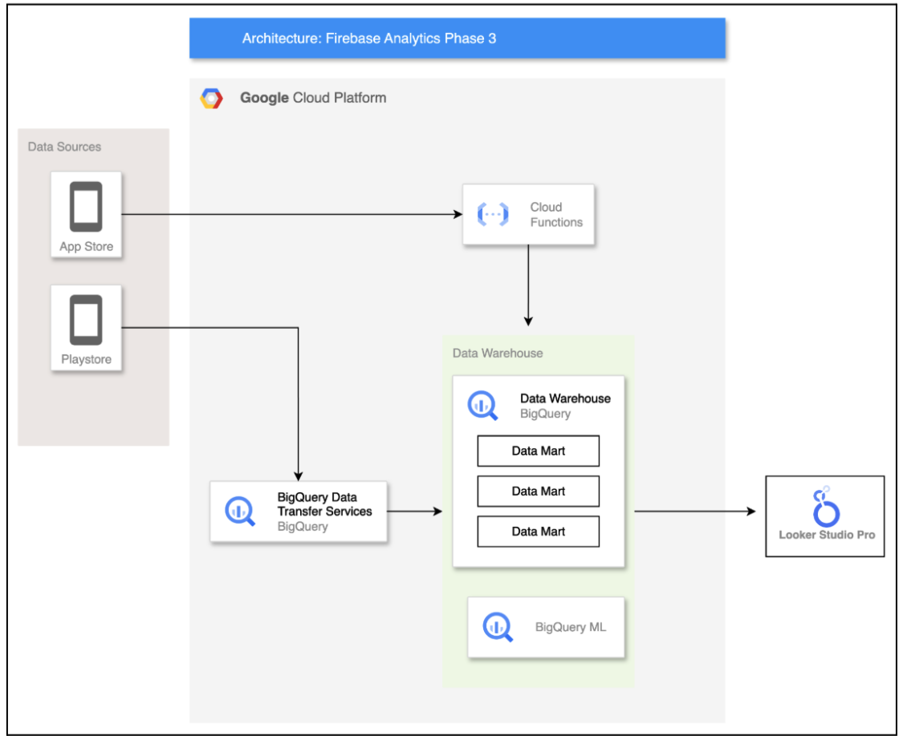
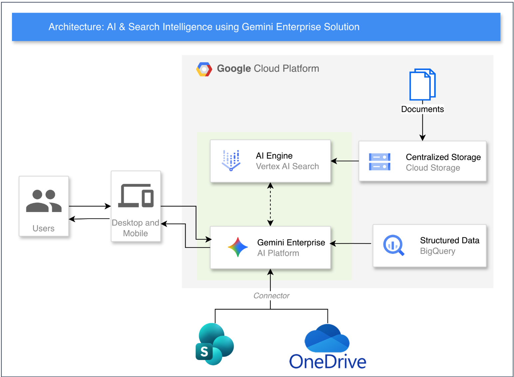
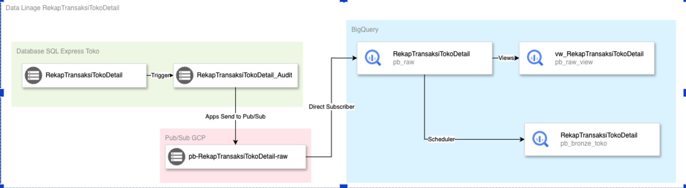

Data & Machine Learning Engineer
PT Smartnet Magna Global
Daftar Studi Kasus & Arsitektur Sistem
Kumpulan rancangan arsitektur data engineering, streaming skala besar, analitik mobile, machine learning, dan sistem multi-agent end-to-end.
High-Level Architecture (Real-Time Streaming & Medallion DWH)

1. Ringkasan & Ruang Lingkup Proyek
Arsitektur data streaming berskala besar end-to-end yang menyerap data transaksi kasir toko dan master data cabang ke dalam BigQuery Medallion Data Warehouse, dilengkapi sistem observabilitas proaktif dan penyajian BI real-time.
-
Komponen yang saya bangun:
- Streaming Dataflow Ingestion Layer: Raw ingestion dari 20 stream Pub/Sub, pembersihan data (in-flight cleansing), deduplikasi stateful, dan pemuatan ke layer bronze (staging) BigQuery via Storage Write API.
- Transformasi Bronze ke Silver: Pipeline Dataflow otomatis untuk standardisasi dan pembersihan data lebih lanjut.
- CDC Master Data Cabang: Alur Google Cloud Datastream untuk menangkap perubahan data master dari basis data cabang ke BigQuery.
- Observabilitas Grafana 1.200 Toko: Monitoring live transfer data, keterlambatan (late data), dan pencegahan data loss pada seluruh 1.200 gerai toko.
2. Alur Arsitektur End-to-End (High-Level Architecture Flow)
| Sumber Data | Deskripsi | Jalur Masuk ke GCP |
|---|---|---|
| Store: DB Express | Database di PC pada masing-masing 1.200 toko lokal, terhubung dengan Stream App | Stream App menerbitkan transaksi kasir (POS) secara real-time ke GCP Pub/Sub table topics |
| Branch: DB Standard | Database tingkat cabang yang mengelola data master | CDC (Change Data Capture) via Datastream langsung menuju BigQuery |
- 1. Ingestion (Pub/Sub & Datastream): Stream App mengirim transaksi kasir real-time ke topik Pub/Sub. Datastream menangkap perubahan CDC master data cabang ke BigQuery.
- 2. Stream Processing (Dataflow Raw Ingestion): Membaca Pub/Sub, mendaratkan data mentah ke Cloud Storage Data Lake, dan memuat ke Bronze Layer BigQuery dengan pembersihan in-flight dan deduplikasi. Event bronze juga dipublikasikan ke Bronze Topics (Pub/Sub).
- 3. Data Jobs (Dataflow): Transformasi Cleansing (bronze ke silver, dibangun mandiri) dan Transformasi Business Logic (silver ke gold).
-
4. Medallion Layers (BigQuery):
- Bronze: Raw events transaksi langsung dari toko.
- Silver: Data bersih dan tervalidasi setelah deduplikasi.
- Gold: Data mart agregasi penjualan dan inventaris stok toko untuk analitik eksekutif.
- 5. Stock Data Path: Khusus data stok disalurkan melalui Silver Topics (Pub/Sub) ke target RDBMS operasional (DB App metadata dan DB Stock Monitor) untuk mendukung sistem aplikasi lain.
- 6. Governance & Monitoring: Dataplex untuk tata kelola data terpusat; Grafana untuk monitoring kesehatan pipeline dan transmisi data 1.200 gerai toko.
- 7. Delivery: Gold Layer menyuplai dashboards, reporting analitik (BI), dan konsumsi aplikasi bisnis lainnya.
3. Detail Implementasi: Pipeline Streaming Dataflow
Satu streaming Dataflow job terpadu menangani 10 tabel sumber dari 2 tipe toko (total 20 subscription Pub/Sub dan 20 tabel BigQuery bronze). Pipeline dibangun secara dinamis berbasis loop konfigurasi tanpa perlu deploy job terpisah per tabel.
| Tahap | Komponen | Fungsi & Logika Pemrosesan |
|---|---|---|
| 1. Read | Pub/Sub I/O | Membaca streaming messages dari 20 subscription Pub/Sub secara paralel. |
| 2. CDC Prepare | JSON Parser & Formatter | Parsing payload JSON, klasifikasi record UPSERT atau DELETE, pembuatan sequence number dari waktu operasi (fallback waktu server jika kosong), normalisasi kode toko, tagging tipe toko, dan penambahan ingestion timestamp. |
| 3. Make Dedup Key | Key Extractor | Membentuk composite key dari nama tabel + primary key (selalu menyertakan kode toko unik). |
| 4. Stateful Dedup | Stateful Processing (Beam State API) | Menyimpan sequence number tertinggi per key dan mendrop record lama atau duplikat. State otomatis kedaluwarsa setelah 7 hari inaktivitas. |
| 5. Fix Types | Defensive Schema Mapper | Type casting ketat ke skema BigQuery tujuan, validasi nilai numerik (mencegah error seperti "N/A"), penghapusan kolom operasional redundan, failed cast diubah menjadi NULL dengan peringatan log. |
| 6. Write | Storage Write API | Penulisan streaming berkecepatan tinggi ke tabel BigQuery bronze. |
| Side Output | Dead-Letter Queue | Record yang gagal diparsing ditulis ke tabel error_logs bersama payload asli dan pesan error tanpa memutus pipeline. |
-
Keputusan Desain Kunci:
- 1 Job Terpadu: Shared workers (
n2-standard-4, autoscaling 1–4, Streaming Engine) membuat biaya fixed per-job hanya dibayar 1 kali dibanding 20 job terpisah. - At-least-once Delivery by Design: Menjamin zero data loss saat jaringan toko tidak stabil; potensi duplikasi diselesaikan oleh stateful dedup berbasis sequence number.
- Stateful Deduplication: Menjamin urutan data; record out-of-order atau late data tidak akan menimpa data yang lebih mutakhir.
- Retry Under Load: Pipeline melakukan retry otomatis saat worker mencapai beban maksimal, mencegah data terbuang pada jam sibuk.
- Preservasi Riwayat Delete: Operasi delete ditandai (
cdc_change_type = DELETE), mempertahankan riwayat audit untuk keputusan di silver layer. - Defensive Type Handling: Validasi ketat mencegah nilai abnormal merusak Storage Write API; anomali dicatat sebagai NULL dengan log warning.
- 1 Job Terpadu: Shared workers (
-
Runtime & Libraries: Apache Beam Python SDK (
apache_beam), Storage Write API, Streaming Engine Runner v2, stateful timer 7 hari, counters Beam metrics, dan structured JSON logging.
4. Lapisan Observabilitas & Monitoring Grafana
Layer monitoring dan alerting real-time yang dirancang untuk mengawasi integritas aliran data dari seluruh 1.200 toko, menjawab 4 pilar utama:
| Pilar Monitor | Pertanyaan yang Dijawab | Metrik & Visualisasi |
|---|---|---|
| Data Transfer | Apakah setiap toko aktif mengirimkan data? | Status pengiriman data per toko dan per tabel, serta volume throughput 1.200 toko. |
| Late Data | Tabel atau toko mana yang mengalami keterlambatan? | Selisih waktu antara jadwal estimasi kedatangan dengan waktu tiba aktual di BigQuery. |
| Duplicate Data | Apakah ada data yang masuk berulang? | Deteksi record duplikat per toko dan tabel akibat mekanisme pengiriman at-least-once. |
| Data Loss | Apakah ada transaksi yang hilang dari BigQuery? | Perbandingan data sumber vs data BigQuery, ditambah pelacakan error dead-letter table dan metrik Beam. |
- Aturan Alerting: Notifikasi instan via Email dan WhatsApp langsung aktif saat terdeteksi anomali data loss atau lonjakan duplikasi data.
- Laporan Harian Otomatis: Automated daily report dikirim via email merangkum kesehatan transfer data, late data, duplikasi, dan potensi data loss dari seluruh gerai toko.
- Pengguna Sistem: Digunakan oleh tim PIC IT Data Operation (kualitas data) dan IT Network klien (menemukan toko dengan masalah konektivitas lokal).
5. Masalah yang Diselesaikan & Dampak Bisnis
- Streaming Near Real-Time Hemat Biaya: Mengonsolidasi 20 pipeline terpisah menjadi 1 streaming job multi-stream, melayani 1.200 toko (~100 GB/bulan) hanya dengan biaya operasional sekitar $300 per bulan.
- Mengatasi Ketidakcocokan Data Master: Menemukan akar masalah selisih data akibat gangguan konektivitas toko, diatasi dengan at-least-once delivery + stateful dedup + monitoring proaktif.
- Deteksi Toko Offline dalam 10 Menit: Toko yang tidak mengirim data langsung terdeteksi dalam waktu 10 menit melalui alert WhatsApp/Email (sebelumnya baru disadari berhari-hari setelah terjadi selisih rekonsiliasi manual).
- Zero Silent Data Loss: Kombinasi dead-letter error logs dan metrik internal pipeline menjamin tidak ada data transaksi kasir yang hilang secara diam-diam.
1. Ringkasan & Ruang Lingkup Proyek
Data warehouse BigQuery berskala enterprise menggunakan Medallion Architecture untuk aplikasi pemesanan tiket kereta terkemuka di Indonesia (10M+ unduhan di Google Play Store). Sistem ini mengolah sekitar 100 GB event analitik per hari yang diekspor dari Firebase Analytics, memodelkannya menjadi data marts berformat Star Schema pada layer Gold, dan menyajikan dashboard Looker Studio interaktif untuk pemantauan perjalanan pengguna (user journey). Proyek ini diselesaikan secara kolaboratif dalam tim (team project).
-
Komponen yang saya bangun (My part):
- Silver Layer Pipelines: Membangun sejumlah tabel silver untuk flattening struktur payload JSON bersarang (nested & repeated fields), deduplikasi event ganda akibat retry jaringan mobile, dan clustering event analitik.
- Gold Layer Data Marts: Merancang dan mengimplementasikan data mart dalam format Star Schema (tabel fakta transaksi/event dan tabel dimensi atribut perjalanan) yang siap pakai untuk visualisasi performa tinggi.
- Dashboards di Looker Studio & Looker Studio Pro: Membangun visualisasi perjalanan pengguna end-to-end, mencakup alur pembelian tiket (purchase), pengembalian dana (refund), dan ubah jadwal (reschedule).
- Data Quality Review & Mitigasi Tagging: Berperan aktif dalam audit kualitas data yang menemukan celah ketiadaan tagging event di beberapa layar kunci aplikasi, serta menyusun strategi perbaikan di sisi mobile app sebelum kalkulasi metrik funnel dijalankan.
2. Alur Arsitektur End-to-End (High-Level Architecture Flow)
| Sumber Data | Deskripsi | Jalur Masuk ke BigQuery |
|---|---|---|
| Mobile App (Firebase) | Event analitik pengguna dari aplikasi tiket Android & iOS | Native export harian & streaming dari Firebase ke BigQuery (~100 GB/hari) |
| Backend Event Tagging | Tagging event layar (screen views) dan status transaksi | Jalur export Firebase yang sama ke BigQuery |
| Multi-Store Data (Fase 3) | Metrik unduhan & instalasi dari Apple App Store & Google Play Store | Cloud Functions (App Store) dan BigQuery Data Transfer Service (Play Store) |
- 1. Ingestion: Event pengguna diserap via ekspor native Firebase ke BigQuery pada skala ~100 GB per hari.
- 2. Bronze Layer: Mendaratkan raw events apa adanya (as-is) tanpa modifikasi, menjamin auditabilitas dan kemampuan melacak kembali (traceability) angka ke event mentah aslinya.
- 3. Silver Layer: Transformasi pembersihan dan standardisasi data: flattening skema array bersarang (unnesting), deduplikasi rekaman ganda, serta pengelompokan (clustering) event.
- 4. Gold Layer: Data marts bisnis siap pakai dengan Star Schema (tabel fakta dan tabel dimensi) yang dioptimasi untuk kueri cepat tanpa kalkulasi berulang.
- 5. Delivery: Dashboard Looker Studio & Looker Studio Pro menyajikan visualisasi user journey tiket secara real-time dan terpercaya.
3. Detail Arsitektur Pipeline & Evolusi Fase (Fase 1, 2 & 3)
Fase 1 & 2: Pipeline Analitik Mobile App & BigQuery Data Marts
Fase 1 & 2 · Ingestion & Funnels
- SDK on Device: Telemetri dan event interaksi dikumpulkan dari aplikasi Android dan iOS.
- Transport Layer: Android Transport Layer dan Apple Push Notification service (APNs) menyalurkan pesan ke backend Firebase.
- Firebase Analytics Backend: Memvalidasi dan mengekspor payload event langsung ke Google BigQuery.
- Warehouse & ML: Data dikelola dalam Data Marts terstruktur, diperkaya metadata via Data Catalog, dan diorkestrasi Cloud Composer untuk pemodelan prediktif BigQuery ML.
- 3 Dashboard Looker Studio: Menghasilkan Marketing Dashboard, Users Monitoring Dashboard, dan Application Dashboard untuk analisis konversi tiket.
Fase 3: Multi-Store Ingestion & Looker Studio Pro
Fase 3 · Multi-Store & Pro
- Sumber Data Store Eksternal: Memperluas penyerapan data ke tingkat store resmi (Apple App Store & Google Play Store).
- Ingestion GCP Otomatis: Data App Store diekstrak via Cloud Functions terkelola, sedangkan data Play Store diserap otomatis lewat BigQuery Data Transfer Service (DTS).
- Data Warehouse Terintegrasi: Konsolidasi data store dengan data interaksi pengguna aplikasi ke dalam Star Schema Data Marts dan evaluasi BigQuery ML.
- Looker Studio Pro: Peningkatan kapabilitas analitik dan kolaborasi enterprise dengan Looker Studio Pro untuk pemangku kepentingan tingkat manajemen.
4. Rincian Layer & Keputusan Desain Utama
| Layer | Tujuan Arsitektur | Kontribusi Spesifik Saya |
|---|---|---|
| Bronze | Raw Landing | Data tiba melalui ekspor native Firebase dan dipertahankan apa adanya (as-is) untuk kebutuhan audit. |
| Silver | Cleaned Data | Membangun pipeline unnesting payload bersarang, deduplikasi record ganda, dan klusterisasi event. |
| Gold | Ready-to-use Marts | Merancang data marts Star Schema dengan fact tables transaksi/event dan dimension tables deskriptif. |
| Dashboards | Business Intelligence | Membangun dashboard interaktif di Looker Studio untuk visualisasi user journey (purchase, refund, reschedule). |
- Keputusan Desain Kunci:
- Medallion Architecture: Memisahkan data mentah, data bersih, dan data siap analitik, sehingga setiap masalah inkonsistensi dapat dilacak langsung ke layer spesifik.
- Star Schema pada Gold: Menyediakan kueri join yang ringan dan cepat untuk Looker Studio, memastikan seluruh departemen membaca tabel fakta dan dimensi yang seragam.
- Dashboard Hanya Membaca Layer Gold: Menjaga dashboard tetap kencang dan mencegah duplikasi logika bisnis di layer visualisasi.
- Flatten & Dedup pada Silver: Membersihkan skema bersarang dan duplikasi event satu kali di layer silver, sehingga seluruh tabel hilir bermula dari data yang bersih dan terpercaya.
- Data Quality Before Analysis: Menegakkan prinsip integritas data—memperbaiki sumber tagging terlebih dahulu sebelum merilis visualisasi funnel.
5. Masalah yang Diselesaikan & Dampak Bisnis
-
Kasus 1 — Permintaan Funnel Perjalanan Pengguna yang Belum Didukung Data:
- Permintaan: Stakeholder bisnis meminta analisis funnel perjalanan pengguna (user journey funnel) untuk seluruh alur pemesanan tiket: pembelian tiket, pengembalian dana (refund), dan ubah jadwal (reschedule).
- Permasalahan: Audit data menemukan bahwa sejumlah layar penting aplikasi belum memiliki tagging event sama sekali, dan sebagian record transaksi/promo tidak valid. Funnel yang dipaksakan dari data ini akan menampilkan persentase drop-off yang salah dan dapat memicu salah ambil keputusan bisnis.
- Investigasi & Keputusan: Kami mengkomparasi seluruh layar alur tiket dengan log event BigQuery untuk memetakan layar yang tidak terlacak. Kami mengomunikasikan temuan ini secara transparan dalam bahasa bisnis dan menyepakati penundaan singkat untuk memperbaiki tagging di aplikasi terlebih dahulu sebelum funnel dibuat.
- Hasil: Klien terhindar dari keputusan bias dan berhasil memperoleh metrik funnel yang 100% akurat dan dapat diandalkan.
-
Kasus 2 — Menjinakkan 100 GB/Hari Event Mentah Bersarang Menjadi Data Mart Cepat:
- Tantangan: Event mentah Firebase memiliki format sangat bersarang (nested arrays), rekaman berulang akibat pengiriman ulang jaringan mobile, dan berukuran ~100 GB/hari sehingga sangat berat dan lambat jika di-query langsung oleh tim analitik.
- Solusi: Medallion warehouse yang melakukan flattening dan deduplikasi otomatis di silver, lalu memodelkannya ke Star Schema di gold.
- Hasil: Tim bisnis dan BI memperoleh dashboard perjalanan tiket yang responsif, kueri cepat, hemat biaya komputasi BigQuery, dan berbasis tabel data yang konsisten di seluruh departemen.
Memprediksi kapan sebuah motor perlu penggantian spare part dan ganti oli, menggunakan data yang diekstraksi dari foto odometer dan plat nomor. Seluruh pipeline berjalan on-premise dengan Python.
Parameter model
- Odometer — jarak tempuh motor (km) hasil ekstraksi dari foto odometer.
- Pembaruan spare part — riwayat kapan dan pada kilometer berapa spare part terakhir diganti.
- Lamanya ganti oli — rentang waktu sejak penggantian oli terakhir.
High-Level Architecture (On-Premise · Python)
Geser diagram ke samping untuk melihat seluruhnya →
- Input gambar: foto odometer dan plat nomor motor dikumpulkan dan disimpan di server on-premise.
- Ekstraksi gambar → tabular: program Python membaca angka odometer dan plat nomor dari gambar, lalu menyimpannya sebagai baris data tabular (plat nomor, odometer, tanggal).
- Penggabungan riwayat servis: data tabular digabungkan berdasarkan plat nomor dengan riwayat pembaruan spare part dan ganti oli.
- Feature engineering & model: odometer, jarak tempuh sejak spare part terakhir diganti, dan lamanya sejak ganti oli terakhir menjadi input model prediktif berbasis Python.
- Output: prediksi kebutuhan penggantian spare part dan ganti oli per motor, sebagai dasar penjadwalan maintenance.
Inisiatif strategis pemanfaatan kecerdasan buatan otonom untuk otomasi analisis dan pembuatan kampanye pemasaran berbasis data.
Distributed Multi-Agent Generative AI System
Merancang dan mengimplementasikan sistem multi-agent terdistribusi otonom di Google Cloud Platform. Agen-agen ini mengagregasi analitik BigQuery, integrasi API finansial pihak ketiga, dan pemodelan generative AI multimodal (Google Gemini & Imagen) untuk menghasilkan kampanye pemasaran berbasis data lokal secara dinamis dan terstruktur.
Automated AI Data Feeding & Latency Reduction
Mengimplementasikan alur kerja Apache Airflow untuk mengotomatiskan penarikan data PostgreSQL langsung ke BigQuery, memangkas latensi transfer data sebesar 30% dan mempercepat kapabilitas penyajian konteks data untuk aplikasi Generative AI.
Arsitektur: AI & Search Intelligence using Gemini Enterprise Solution

Solusi terpadu pencarian cerdas dan pemrosesan dokumen berbasis AI di Google Cloud Platform yang menghubungkan data enterprise terstruktur dan tidak terstruktur dengan Large Language Model multimodal.
1. Ingestion Dokumen Terpusat
Dokumen korporat disimpan secara terpusat di Google Cloud Storage (GCS) sebagai basis pengetahuan data tak terstruktur.
2. Vertex AI Search & Indexing
Vertex AI Search mem-parsing dan mengindeks dokumen untuk semantic vector search berkecepatan tinggi dalam kerangka Retrieval-Augmented Generation (RAG).
3. Konektor SharePoint & OneDrive
Integrasi konektor pihak ketiga menyinkronkan repositori Microsoft SharePoint dan OneDrive ke lingkungan AI secara aman.
4. Grounding Gemini & BigQuery
Platform Gemini Enterprise melakukan grounding kueri dengan metrik terstruktur BigQuery dan dokumen untuk menyajikan respons akurat ke desktop dan mobile.
Data Lineage Transaksi Toko: RekapTransaksiTokoDetail

Silsilah alur data terperinci dari level trigger basis data SQL Express di gerai toko lokal hingga tersaji di tabel analitik Google BigQuery.
1. Trigger Tabel Audit Toko
Perubahan data di tabel RekapTransaksiTokoDetail mengaktifkan trigger otomatis yang mencatat log audit ke RekapTransaksiTokoDetail_Audit.
2. Publikasi ke GCP Pub/Sub
Aplikasi toko mengekstrak baris audit dan menerbitkannya ke topik GCP Pub/Sub: pb-RekapTransaksiTokoDetail-raw.
3. BigQuery Direct Subscription
Direct Subscriber BigQuery menyerap streaming message langsung ke tabel raw RekapTransaksiTokoDetail tanpa delay batch.
4. Analytical View & Scheduler
View analitik vw_RekapTransaksiTokoDetail memfilter kolom redundan, dan Cloud Scheduler memprosesnya ke tabel produksi pb_bronze_toko.
Ingestion Skala Besar & Streaming Pipelines
Pengembangan jalur data bervolume tinggi, penanganan data real-time, dan migrasi basis data NoSQL.
ETL Firebase ke Google BigQuery
Merancang dan memelihara pipeline ETL untuk memproses lebih dari 1TB data dari Firebase ke Google BigQuery, meningkatkan aksesibilitas dan ketersediaan data analitik untuk tim data science dan business intelligence.
Streamlined Real-Time Data Ingestion
Mengembangkan pipeline streaming real-time ke BigQuery memanfaatkan GCP Pub/Sub dan Cloud Dataflow. Mengintegrasikan logika transformasi in-flight untuk memfilter kolom audit redundan secara langsung, mengurangi overhead dan biaya penyimpanan hilir secara signifikan.
Automated NoSQL Database Migration
Merekayasa pipeline migrasi data otomatis tanpa kendala (seamless migration) untuk memindahkan beban kerja NoSQL dari on-premise Apache Cassandra ke Google Cloud Bigtable terkelola.
Data Orchestration, Transformation & Analytics
Standardisasi logika bisnis dan percepatan kueri eksploratif data warehouse.
Orchestration via Apache Airflow & dbt
Mengorkestrasi tahapan ingestion, transformasi, dan uji kualitas data otomatis menggunakan Apache Airflow dan dbt (data build tool). Berhasil meningkatkan kesegaran data (freshness) sebesar 30% dan menjamin konsistensi logika bisnis di seluruh dataset perusahaan.
Integrasi ClickHouse Columnar Storage
Mengintegrasikan ClickHouse untuk pengujian analitik berkinerja tinggi pada proyek proof-of-concept (POC), menghasilkan akselerasi drastis dalam eksplorasi dan query analitik dataset berukuran besar.
5+ Dashboard Interaktif Looker
Membangun 5+ dashboard analitik interaktif di Looker untuk kebutuhan pelaporan real-time manajemen, mengotomatiskan alur kerja dan memangkas pemrosesan data manual hingga 40%.
Optimasi & Desain Basis Data
Merancang dan mengoptimalkan skema basis data pada lebih dari 3 aplikasi produksi, menghasilkan peningkatan performa kueri rata-rata sebesar 30%.
Tata Kelola Arsitektur & Manajemen Proyek
Menyelaraskan rancangan arsitektur teknis dengan sasaran bisnis strategis para pemangku kepentingan.
Dokumentasi Kebutuhan Bisnis & Fungsional
Menyusun 3+ Business Requirements Documents (BRD) dan Functional Specification Documents (FSD) komprehensif, mengeliminasi ambiguitas kebutuhan proyek dan memangkas revisi stakeholder hingga 20%.
Rancangan Arsitektur Sistem & Spesifikasi Teknis
Membuat 3+ System Architecture Documents (SAD) dan Technical Specification Documents (TSD), menyelaraskan rancang bangun teknis dengan objektif bisnis serta meningkatkan kejelasan tahap development sebesar 15%.
Analisis Kebutuhan Lintas Tim
Menganalisis kebutuhan teknis untuk 4+ inisiatif proyek, memfasilitasi komunikasi efektif antara stakeholder bisnis dan developer, serta memotong miskomunikasi sebesar 25%.
Supervisi Developer & Validasi Kualitas
Memonitor pengerjaan tugas tim developer untuk 5+ proyek (menekan keterlambatan task hingga 10%) dan memvalidasi hasil pengujian untuk 4+ proyek dengan tingkat kepatuhan spesifikasi mencapai 90%.